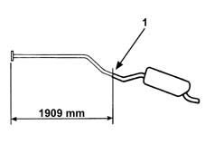
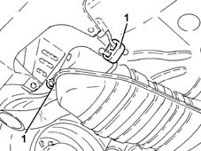
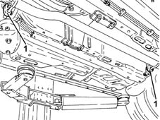
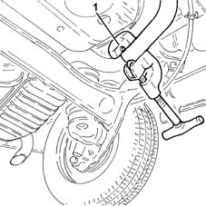
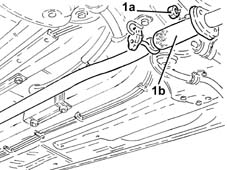
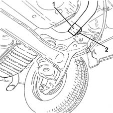

1076B40 CENTRE exhaust PIPE - R.R.
- Path
- Procedures > 10 ENGINE > 1076 EXHAUST PIPES AND SILENCERS > 1076B exhaust pipes and silencers > 1076B40 CENTRE exhaust PIPE - R.R.
- Kind
- repair procedure (removal / refitting; the operation number is the code)
- Applies to
- engines: 1.3 JTD; all production periods
- Interactive page
- https://sloeber94.github.io/elrnDB-lYpsln/en/#/2429061
Applies to: engines: 1.3 JTD; all production periods
 Removing
Removing
 Refitting
RefittingPosition the vehicle on the ramp.
1. Trace the cutting line to the specified dimension on the exhaust pipe.

Applies to: engines: 1.3 JTD; all production periods
1. Release the exhaust pipe rear flexible mountings.

Applies to: engines: 1.3 JTD; all production periods
1. Release the exhaust pipe centre flexible mountings.

Applies to: engines: 1.3 JTD; all production periods
Lower the rear exhaust silencer as much as possible.
Secure as appropriate the rear exhaust silencer.
1. Using a suitable tool, cut the exhaust pipe on the line previously drawn.

Applies to: engines: 1.3 JTD; all production periods
1. Undo the nuts (1a) securing the central exhaust pipe (1b), on the side of the rigid section of the exhaust pipe between catalytic converter and silencer and remove it.

Applies to: engines: 1.3 JTD; all production periods
Refitting
RemovingUsing a file, remove the burrs on the cut end of the rear exhaust silencer.
Refit in its seating the new central exhaust pipe and secure it with its nuts to the rigid section of the exhaust pipe between catalytic converter and silencer.
1. Join the rear exhaust silencer to the central exhaust pipe using the metal band supplied by Parts with the central exhaust pipe.
2. Tighten the nut on the metal band.

Applies to: engines: 1.3 JTD; all production periods
Connect the exhaust pipe flexible mountings.
Remove the car from the ramps.